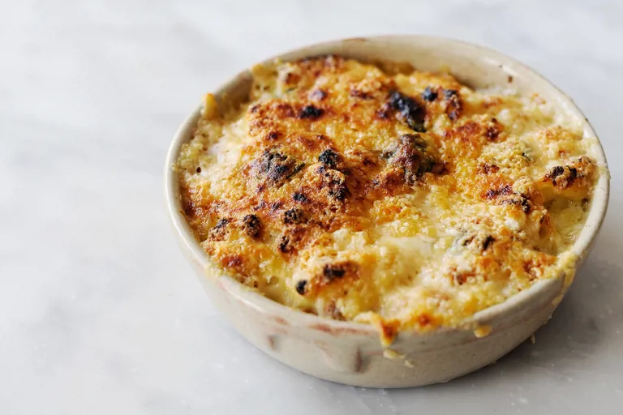

Macaroni cheese with basil and garlic
Macaroni cheese with basil and garlic

Description
using milk infused with bay, thyme, fresh basil and Dijon mustard. Uses both Gruyère and Parmesan for the cheese in this recipe, which gives this common dish a satisfyingly rich flavour, but if you are looking to make this recipe for vegetarians, select cheeses made with vegetarian rennet.
Ingredients
- 8 3/4 oz of macaroni pasta
- 1 1/4 pints of milk
- 1/4 oz of thyme
- 2 bay leaves
- 1 2/3 oz of butter
- 4 garlic cloves, finely chopped
- 1 3/4 oz of flour
- 15 basil leaves, ripped
- 3/4 oz of Dijon mustard
- 1 1/16 oz of Parmesan
- 1 3/4 oz of Gruyère
- 1 pinch of salt
- 1 tsp black pepper
Steps
- Start by cooking some pasta of your choice in a pan of boiling water. Once cooked, strain the pasta and set aside.
- 8 3/4 oz of macaroni pasta
- Place the milk into a pan over a low-medium heat and add the thyme and bay. Bring up to a warm heat and leave to infuse for 10 minutes.
- 1 1/4 pints of milk
- 1/4 oz of thyme
- 2 bay leaves
- Meanwhile, place a separate pan over a low heat and add the butter and garlic. Cook out for 2-3 minutes then add the flour. Heat for 2-3 minutes and stir constantly so the mixture comes together.
- 1 2/3 oz of butter
- 4 garlic cloves
- 1 3/4 oz of flour
- Strain the milk, thyme, and bay mixture so that you are just left with the infused milk. Gradually (over 5 minutes) add the infused milk to the other pan and stir with a wooden spoon. Bring to a simmer.
- Take the pan off the heat and season with salt and pepper. Add the cheese, mustard, basil, and pasta to the pan and then pour the contents of the pan into a casserole dish. Cover with some extra cheese and place in the oven at 180°C for 20 minutes.
- 1 pinch of salt
- 15 basil leaves
- 3/4 oz of Dijon mustard
- 1 3/4 oz of Gruyère
- 1 1/16 oz of Parmesan
- 1 tsp black pepper
- Remove the dish from the oven, divide the macaroni cheese into 4 portions, and serve immediately.